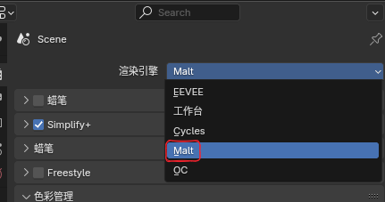
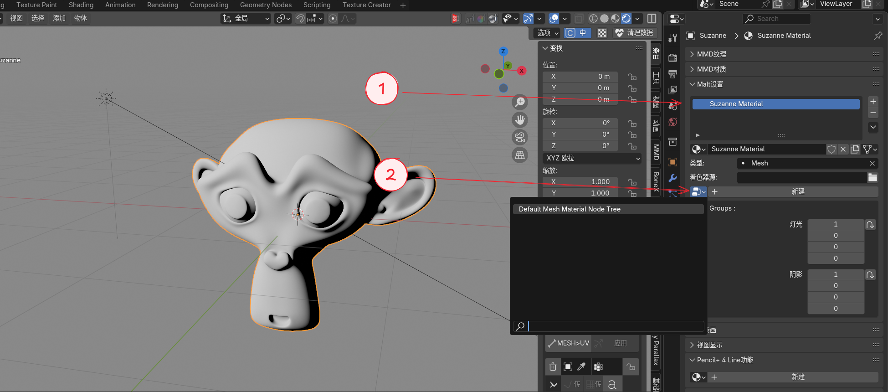
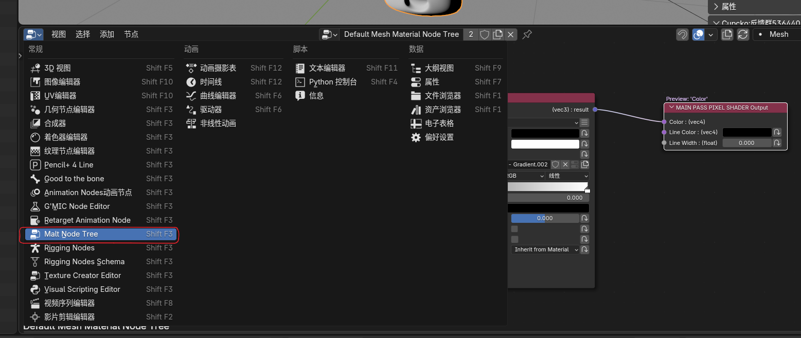
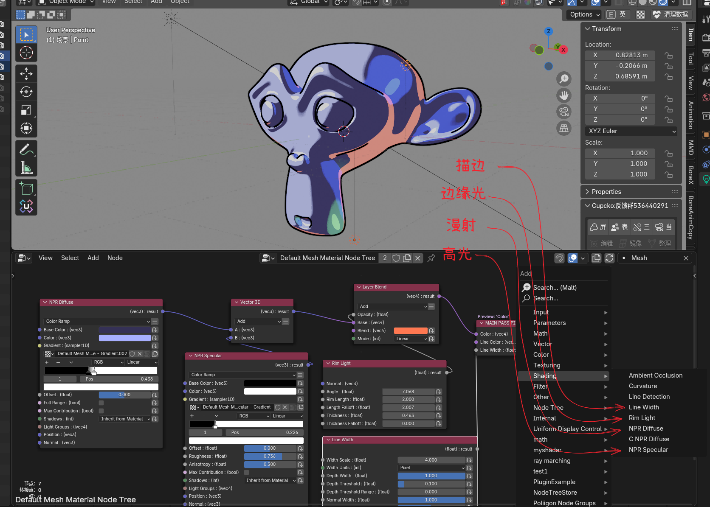
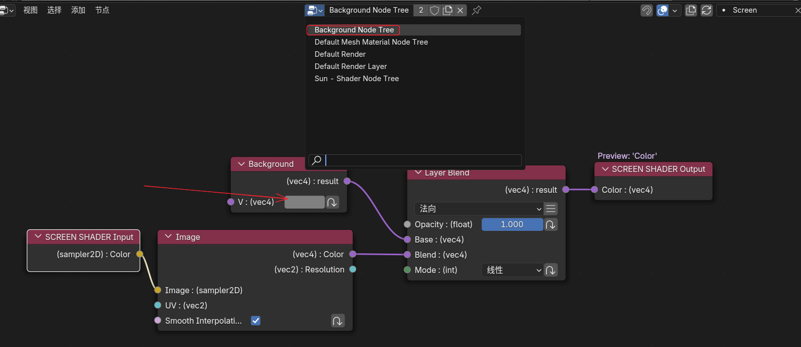
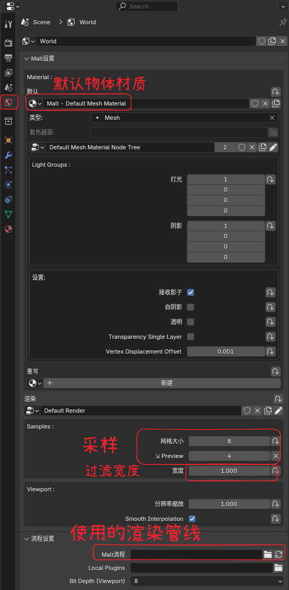
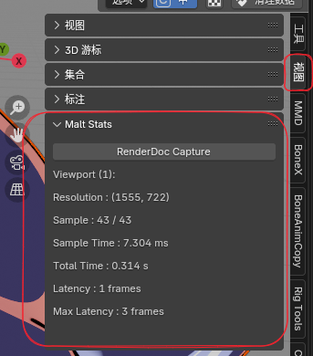
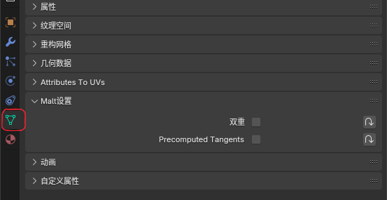
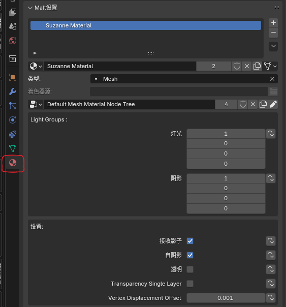

Blender Malt NPR 渲染指南
简介
本文章以我的学习记录分享为主,希望能抛砖引玉吸引到更多的大佬使用这个渲染器，制作出更优秀的作品
这里以鸣潮的尤诺作为示例，跟完所有教程应该可以获得这样的一个渲染效果
渲染器介绍
Malt(麦芽)是一个完全可定制的免费开源引擎，主要针对NPR渲染而开发
麦芽由Miguel Pozo在2021年6月进行开发，历经大半年时间完成,在这里可以看到一些使用Malt的作品
Miguel Pozo也是现在blenderNPR分支的主要开发人员
渲染器现在处于维护状态，也就是仅对最新版本进行适配，不再添加新的功能，经过测试最新的blender4.5版本以及之前的版本应该都是支持的
渲染器的更多信息在官方文档中已经写的比较详细了，我就不过多赘述了
Malt渲染器的优劣
使用Malt的优势：
- 实时渲染(材质里不做太多骚操作的情况下)
- 内置风格化NPR着色器模型，快速创建风格化材质
- 高质量的阴影(只有硬阴影，软阴影社区中中有实现的例子)
- 灯光排除
- 相对优秀的内置描边(ID边缘检测,深度检测,法线检测混合的描边)
-
由GLSL自动生成着色器节点(可以从现有的着色器代码里直接开抄)
-
可自定义的渲染管线(使用python创建自定义的渲染管线)
- 完全开放的Opengl(理论上Opengl能做到的，这里都可以做到)
使用Malt的缺点：
- 较为稀缺的学习资料，能找的有关渲染器的所有资料都在这了
- 偶尔不知所以的报错和bug,虽然大多数没有影响
- 和光线追踪相关的一切东西都不存在(内置SSAO,屏幕空间反射社区中有实现的例子)
- 比较慢的GLSL生成节点的速度(大概3s作用)
- blender内置的合成器支持有限，几乎所有的后期效果都要手搓(例如辉光,景深，散景等后期效果)
快速开始
安装
下载压缩包，和正常的blender插件一样的安装方式即可
还有一个节点组分支版本，可以创建节点组，其他和主要版本没有区别，推荐用这个

- Global Plugins ：Malt的插件文件夹(Malt本身有自己的插件系统)
- Max Viewport Render Framerate ：最大视图帧率给到60就行了
开始渲染!!!
- 渲染器切换到Malt

切换的时候会自动打开一个opengl的小窗口，只是为了保证渲染速度，不用管
- 创建一个模型和一个日光，为其添加材质和创建着色器

- 如果你不知道怎么创建模型和灯光，那么应该去看看Blender入门
- Malt中材质与着色器是分离的，一个着色器可以被多个材质使用
- Mlat不支持面光,只支持日光，聚光，点光
-
切换到Malt的着色器编辑器面板
 只有切换到Malt渲染器才会有这个面板 -
添加组合内置的着色器节点，随便调整一下参数
 基础卡通材质
- 内置的着色器模型在Shader下
- 使用相加(在Math-Vector3D里)和颜色混合(在Color-Layer Blend)组合着色器
- 将Line Width节点连接到输出的Line Width即可创建描边
- 这里额外添加了几个点光，可以看到内置的着色器是默认支持多光源的
- 纯黄色是Malt里的着色器错误的颜色，类似blender或unity里的紫红色，刚创建着色器可以会变黄，随便找个节点连上就好了
- Malt内置了预览节点的快捷键,按Ctrl+Shift+鼠标左键点击节点即可快速预览
-
调整背景颜色
 切换到Background Node Tree节点树在这里去调整背景颜色，也可以添加一个HDR贴图之类的
其他设置
-
渲染器设置
 在世界环境选项卡中可以调整一些渲染器的设置 - 可以设置没有材质时物体使用的材质 - Samples->网格大小:渲染器采样 - Samples->宽度:抗锯齿过滤的宽度，设置成0就是保留像素的效果
渲染流程:可以选择使用的渲染管线
除了默认的渲染管线，Malt内还内置了一个最小渲染管线Mini Pipeline可以选择使用
在
插件目录:addons\BlenderMalt\.MaltPath\Malt\Pipelines\MiniPipeline渲染管线右边的刷新按钮可以重启渲染器,非常有用
-
渲染信息
 在N面板的视图选项卡里可以看到渲染信息 -
物体渲染设置
 在网格属性里可以设置双面渲染和是否预计算切线 -
材质设置
 大部分看名字应该就知道是啥意思了材质只受相同灯光组的灯光的影响
<0,0,0>是背景使用的组，一般不要设置成一样的
相关资源